78旧版映照scene公版✓ 判官过审你每天抱怨的工作，其实是你的大脑在骗你
🎬 你觉得洗碗累、拧螺丝苦？福特说了一句让我重新理解工作的话。
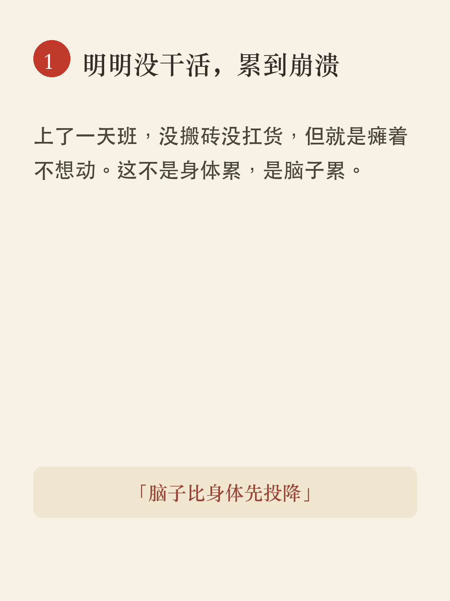
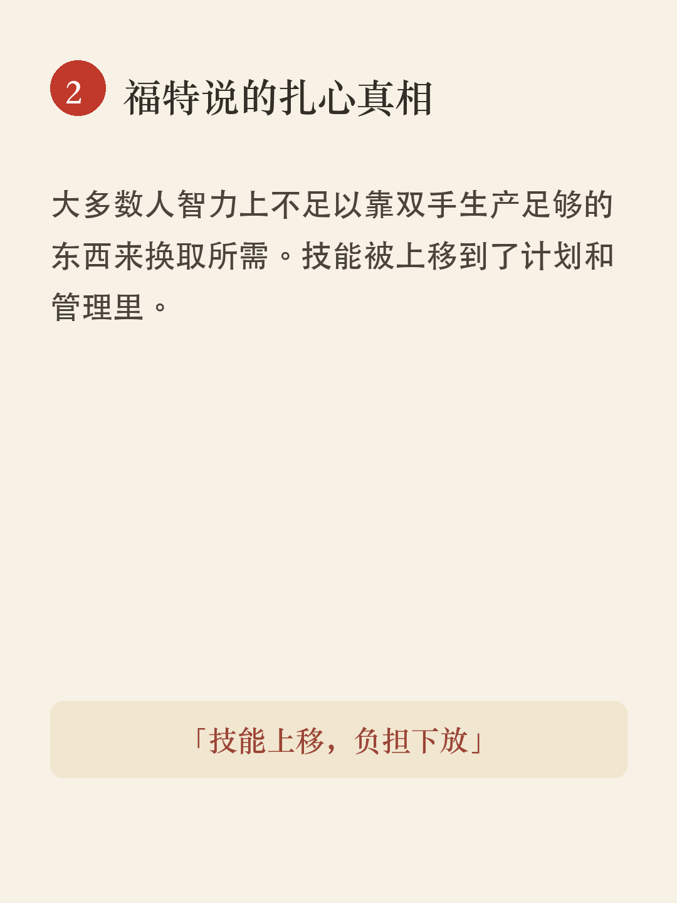
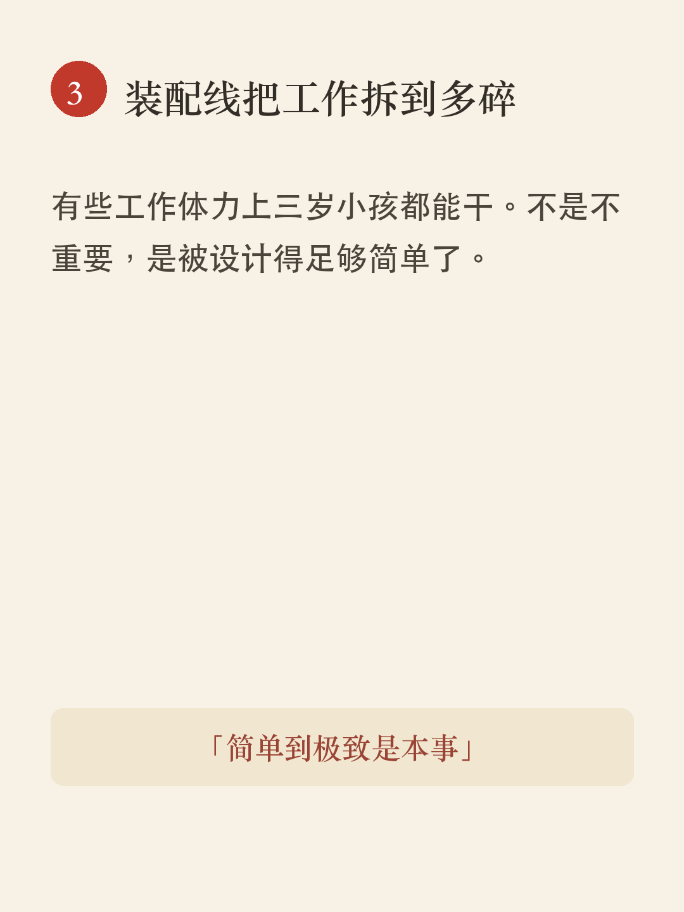
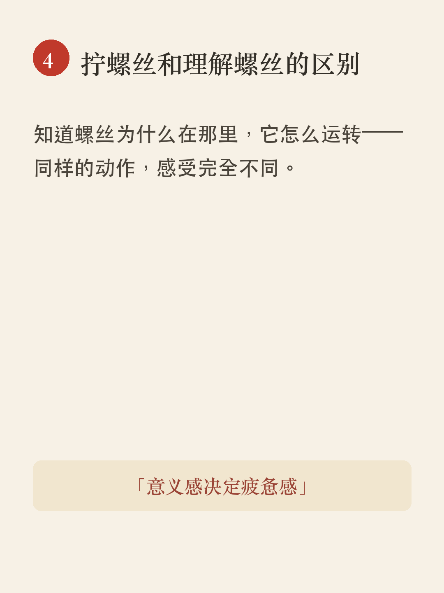
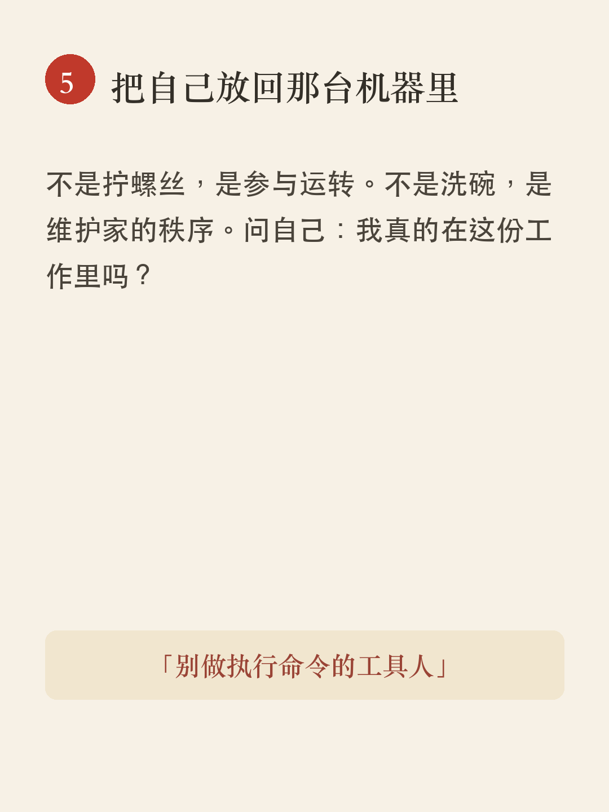
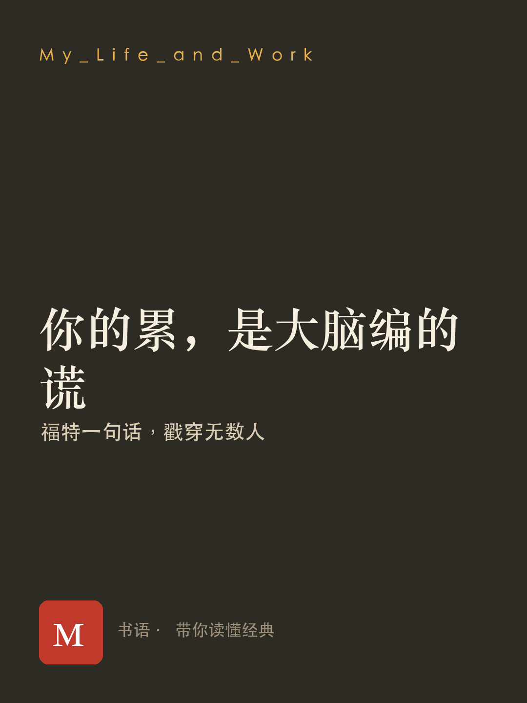
📄 配文·钩子（不剧透）
读福特《My Life and Work》被一句话击中了——我们以为工作很累是因为活太多，其实是因为我们根本没在「参与」工作。技能被上移之后，一线岗位只需要执行简单动作，思考负担降到最低。但问题来了：当你只是机械拧螺丝，不去理解这颗螺丝的意义，你当然会累。这种累不是体力耗尽，是意义感的缺失。福特用装配线证明了：效率提升靠的不是让人更拼命，而是把工作设计得更简单。所以啊，当你抱怨工作消耗你的时候，不妨停下来问一句——我真的在这份工作里吗？口播稿全文
你有没有这种感觉——上了一天班，明明没干什么体力活，但就是累得不行？
我最近读福特的《My Life and Work》，读到一段话让我愣了半天。
他说：大多数人在这个世界上，智力上不足以靠自己的双手生产足够多的东西，来换取他们需要的东西。
这话听起来挺扎心的。但福特紧接着说了一句更扎心的——他说，我们并没有把技能从工作中拿走，我们是把技能放到了更高的地方：放到了计划里，放到了管理里，放到了工具的设计里。而那些原本需要技能的工作，被分解成了一个个简单的动作，任何人学几个小时甚至几天就能上手。
他举了个例子。在他的工厂里，有些工作"jobs which, as far as strength is concerned, might be attended to by a child of three"——就体力而言，三岁小孩都能干。不是因为这些工作不重要，而是因为它们被设计得足够简单了。
你发现没有？福特其实在告诉我们一个真相——他关注的核心是：技能被上移之后，一线工人不需要掌握复杂的技艺，只需要学会几个简单的动作就够了。装配线把工作拆解到极致，每个人只做一件事、一个动作，思考的负担也降到了最低。
想想你每天的工作。拧螺丝累不累？累。但如果你知道这颗螺丝为什么在那里，它装上去之后会怎么运转，你还会觉得那么累吗？洗碗烦不烦？烦。但如果你洗碗的时候满脑子都是"我在让这个家正常运转"，感觉会不会不一样？
福特在书里还描述了装配线的效果：通过科学的方法，一个人现在能做以前四个人的工作。装配时间从最初的几十分钟缩短到了几分钟。这种效率的提升，靠的不是让工人更拼命，而是把工作设计得更简单。
所以，从福特的实践来看，企业通过把技能上移与流程化，降低了一线岗位的上手难度与思考负荷。至于个体是否因参与感而感到不累，这是延伸思考，不是原文的结论。
你不是在拧螺丝，你是在参与一台机器的运转。你不是在洗碗，你是在维护一个家的秩序。当你觉得工作只是在消耗你的时候，不妨停下来问一句——我真的在这份工作里吗？还是只是一个执行命令的工具人？
福特的工厂把复杂的工作拆成了简单动作，让每个人都能参与。而我们，其实也可以反过来——把自己放回去，重新理解你正在做的事。
78旧版映照scene公版✓ 判官过审你改产品改了个寂寞——真正该改的是造它的方法
🎬 福特花12年把Model T设计定型，然后12年不改车型，但车却越来越便宜。秘诀只有一个。
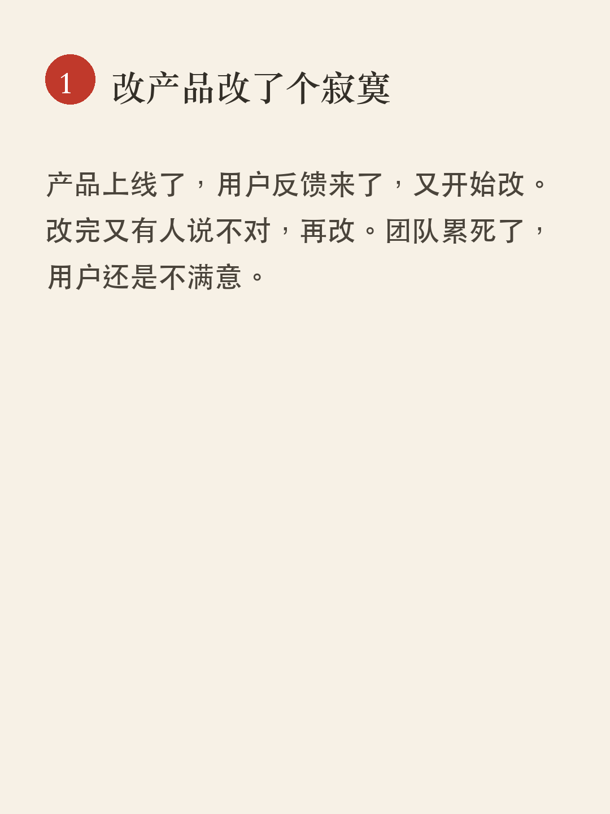
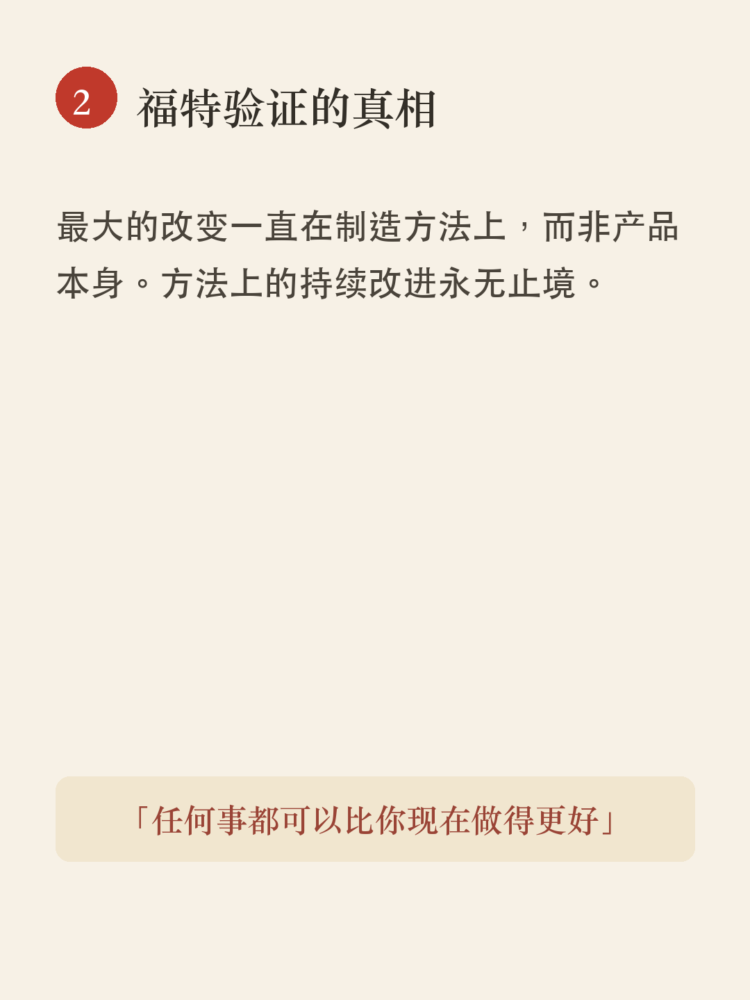
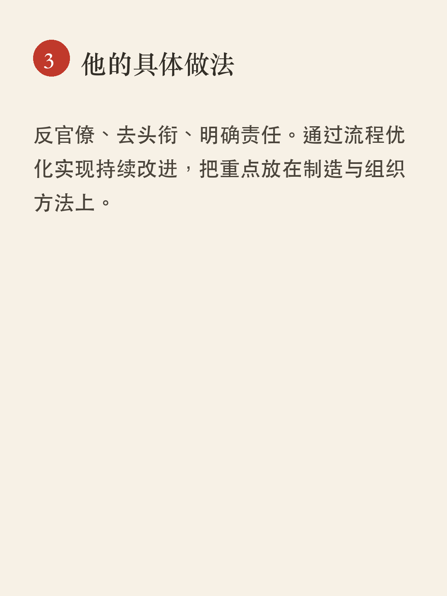
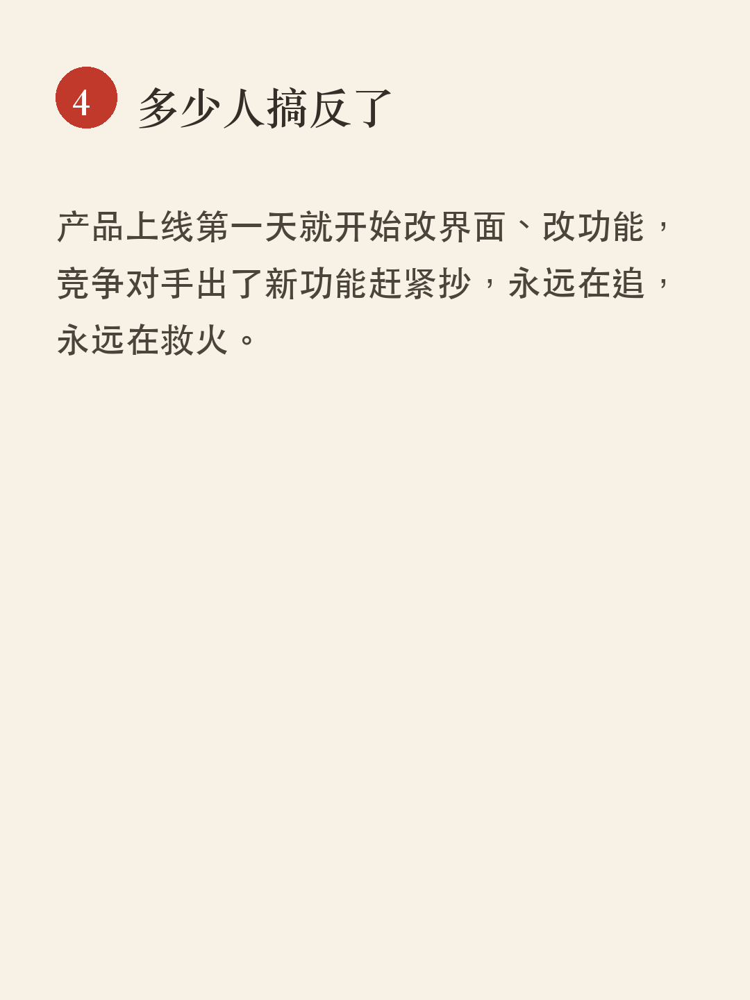
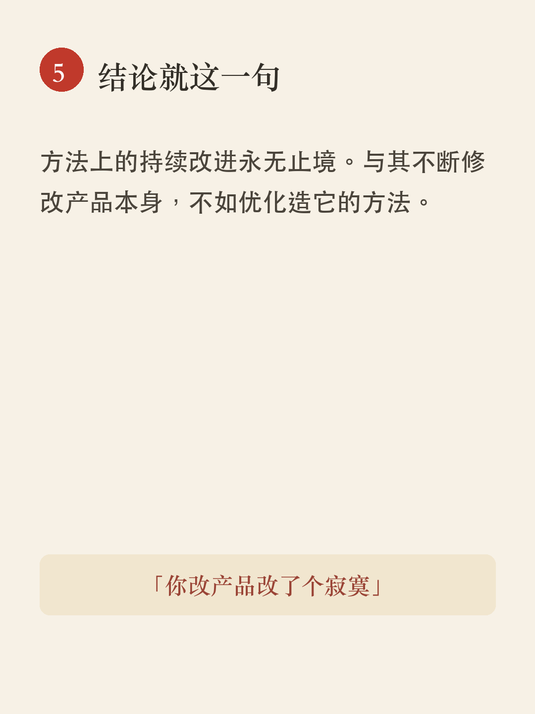
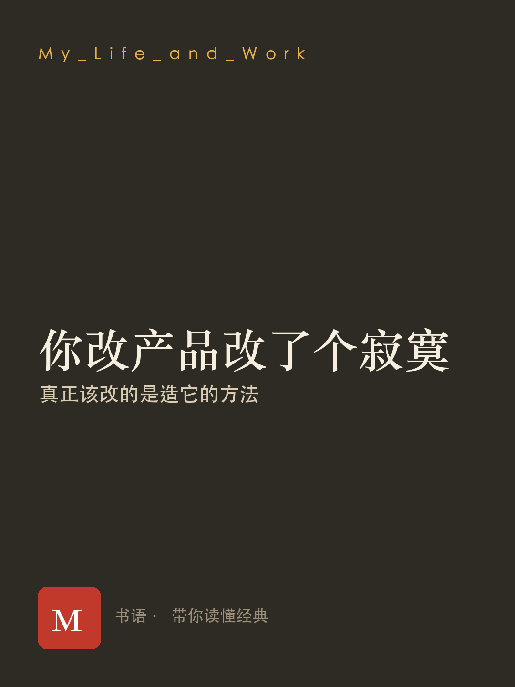
📄 配文·钩子（不剧透）
你有没有这种感觉——产品改了又改，团队累死，用户还是不满意？
今天告诉你一个反直觉的真相：福特用一辈子验证，最大改变永远在制造方法上，而非产品本身。他主张持续改进流程，反官僚、去头衔、明确责任。
多少人搞反了？产品上线第一天就开始改界面改功能，竞争对手出啥赶紧抄，永远在救火。
方法上的持续改进永无止境。你改产品改了个寂寞。真正该改的，是造它的方法。口播稿全文
你有没有这种感觉——产品上线了，用户反馈来了，于是你又开始改。改完又有人说不对，再改。改来改去，团队累死了，用户还是不满意。
今天我要告诉你一个反直觉的真相：福特强调，重大改进主要发生在制造与组织方法上，倡导持续改进流程，但并非否认对产品本身的改进。
这个道理，是福特用一辈子验证出来的。
福特自己说过，他们最大的改变一直是在制造方法上，这些方法从未停止过改进。
他强调工作与方法改进永远不该停止。
怎么做到的？
福特将改进的重点放在制造与组织方法上。
他在书中着重强调反官僚、去头衔、明确责任，并写道："Everything can always be done better than it is being done."——任何事都可以比你现在做得更好。他通过这些具体做法来实现流程的持续优化。
他主张持续改进做事与制造方法，并尽量避免不必要的改变。
今天多少人搞反了？产品上线第一天就开始改界面、改功能、改文案，改到第三版发现第一批用户早就跑了。竞争对手出了个新功能，赶紧抄，又改。永远在追，永远在救火。
在他看来，方法上的持续改进永无止境。
你改产品改了个寂寞。真正该改的，是造它的方法。
78旧版洞见scene公版✓ 判官过审最有力的竞争，是不抢别人的生意
🎬 福特说'靠手段抢别人生意的，是犯罪'——这话今天听起来，简直是商业社会的清流。
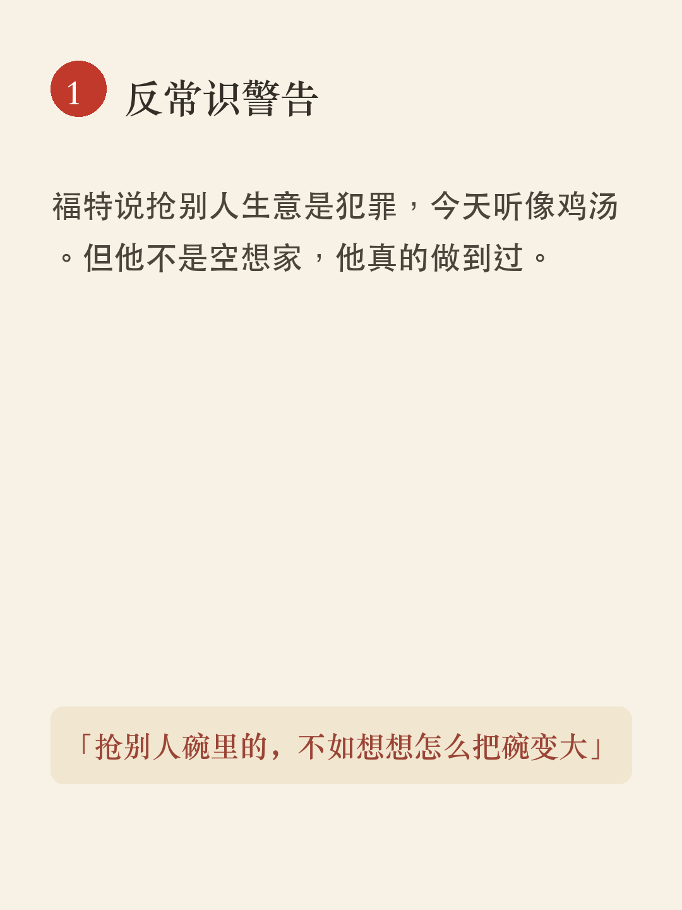
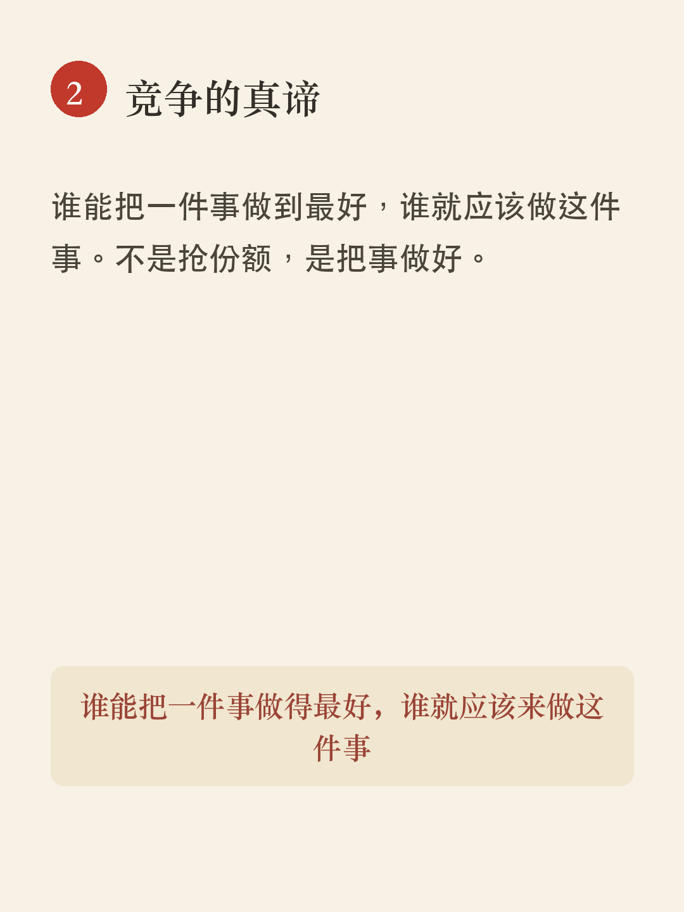
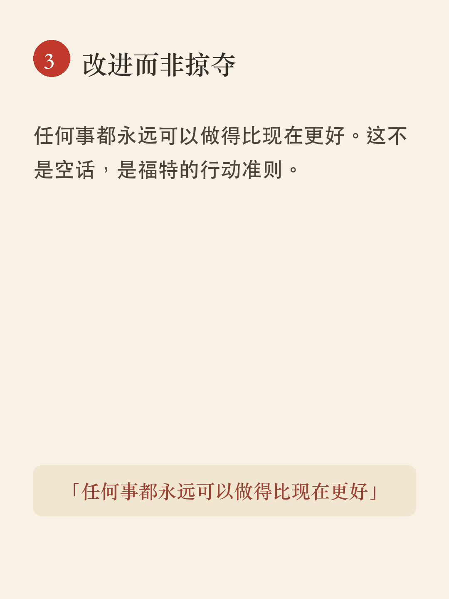
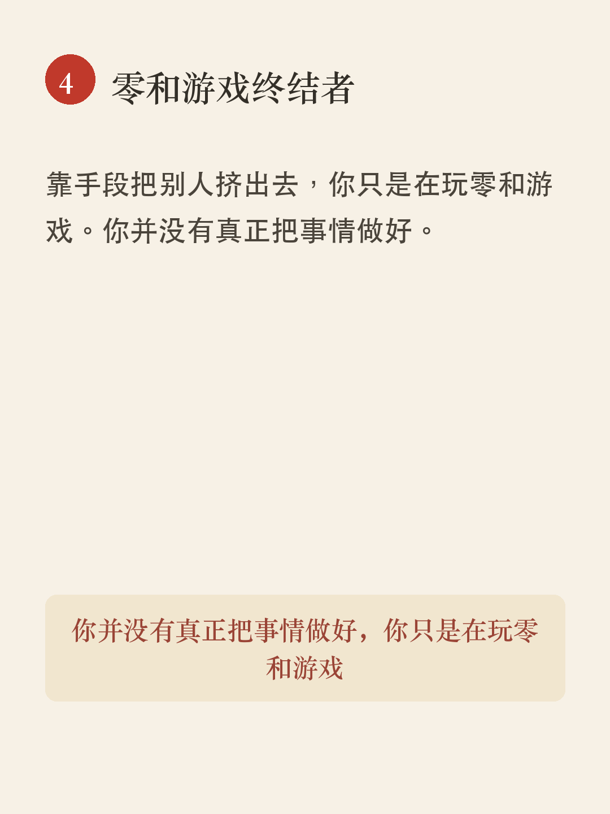
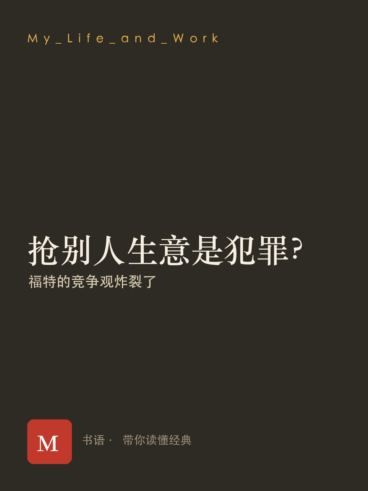
📄 配文·钩子（不剧透）
读到这里我愣了好几秒。福特说抢别人生意是犯罪，今天听十个人有九个觉得你太天真。但他说这话是有底气的——他真的做到过。
不是靠抢份额，是靠把东西做得更好。工厂里废除头衔制度，让每个人承担完整责任，持续改进工作方法。
所以别再卷了。抢别人碗里的，不如想想怎么把碗变大。口播稿全文
你知道吗，亨利·福特说过一句话，我第一次读到的时候愣了好几秒。
他说：**"It is criminal to try to get business away from another man."**（试图把别人的生意夺走是犯罪。）
这话搁今天说，十个人里有九个会觉得你太天真了。商场如战场，不抢怎么活？但福特不是空想家，他凭什么说"抢生意是犯罪"？
因为他理解的竞争，跟我们以为的，根本不是一回事。
福特在书里写：**"Whoever does a thing best ought to be the one to do it."**（谁能把一件事做得最好，谁就应该来做这件事。）就这么简单。他反对通过"抢生意"获取业务，主张让"做得最好的人去做"——聚焦在工作改进与责任。
怎么干？福特有一个传统，或者说核心准则：**"Everything can always be done better than it is being done."**——任何事都永远可以做得比现在更好。他讲的不是抢市场，是不断改进工作方法、提高效率。
所以福特的竞争逻辑是什么？
不是"我多卖一台你就少卖一台"。是"我把东西做得更好，把工作做得更好"。
这就是为什么他把"抢生意"视为不正当的竞争方式。他更主张由最能把事情做好的那方来做——你靠手段把别人挤出去，你并没有真正把事情做好，你只是在玩一个零和游戏。
今天我们动不动就谈"内卷"，谈"抢份额"，好像商业世界就是你死我活。但福特说了：**谁做得好谁来做，把东西做好——这才是正经的竞争。**
抢别人碗里的，不如想想怎么把碗变大。
这句话听起来像鸡汤，但说这话的人，真的做到过——他废除了工厂里的头衔制度，让每个人承担完整责任，从底层培养人才，持续改进工作方法。这些都是第六章里可以验证的做法。
78旧版映照scene公版✓ 判官过审你的'匠心'可能是最大的浪费
🎬 你以为执着于把产品做到完美是工匠精神？福特说这种匠心，有时候是在害人。
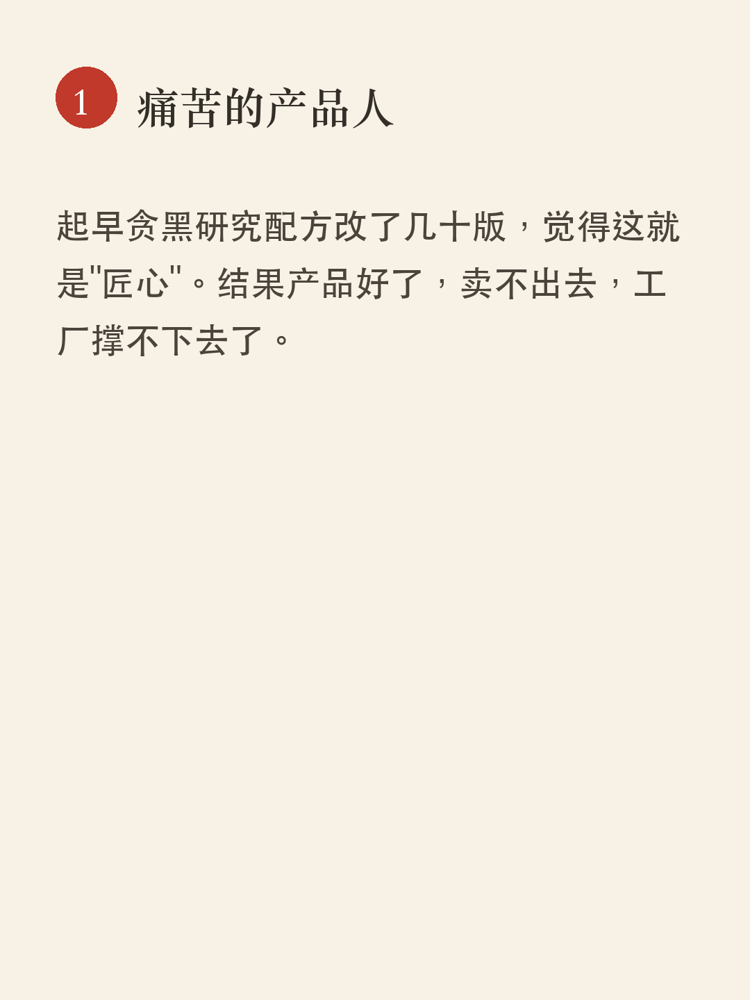
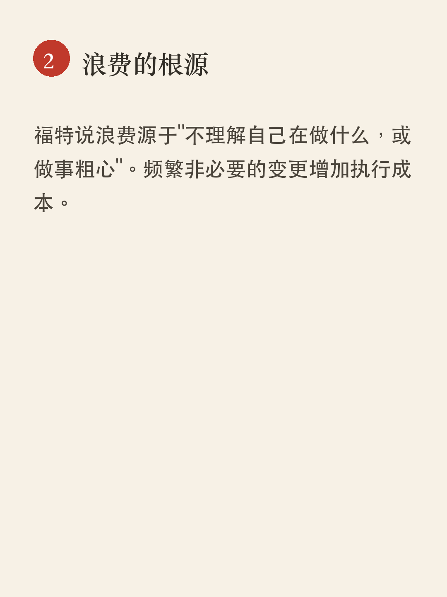
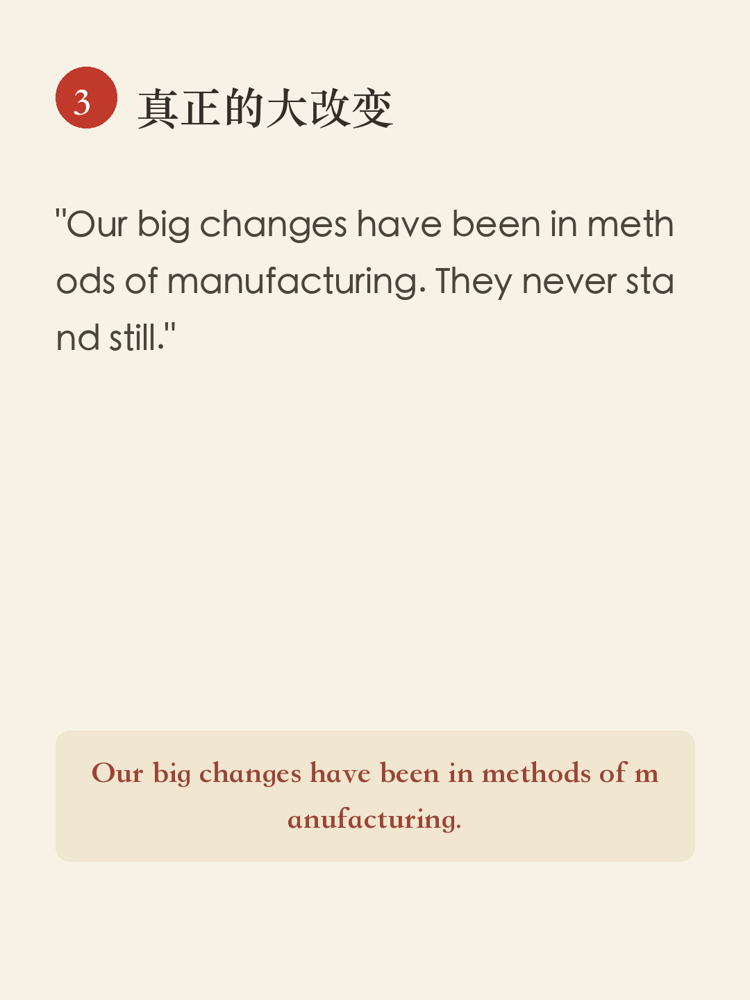
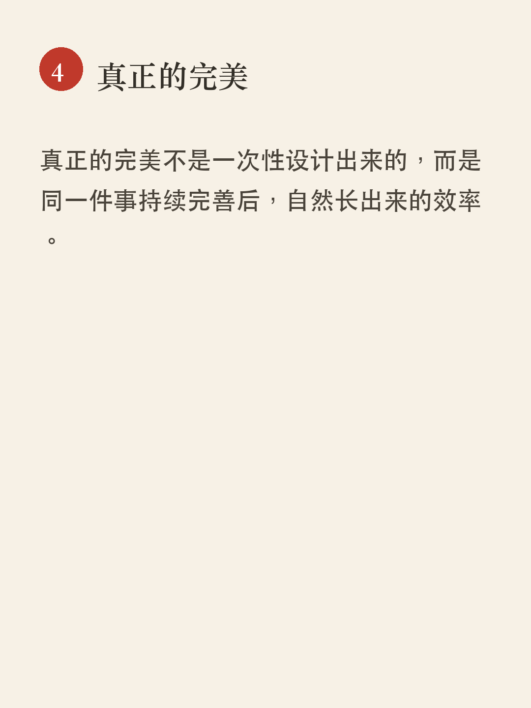
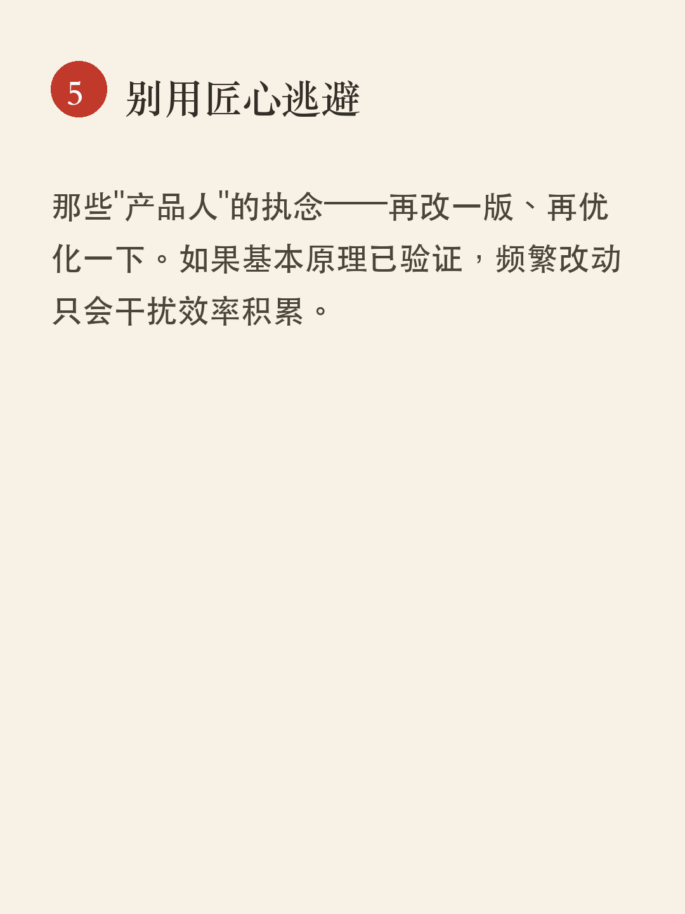
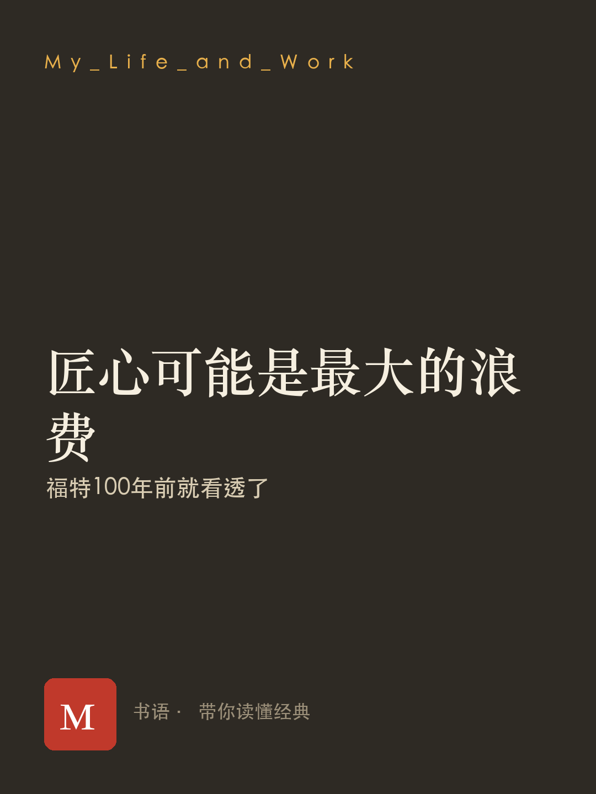
📄 配文·钩子（不剧透）
很多人做产品很痛苦，觉得"匠心"就是改改改。
结果呢？产品好了，卖不出去。
这就是福特100年前看到的问题——浪费很大程度上源于不理解自己在做什么。频繁非必要的变更增加成本，真正的完美是持续精进方法，而非追逐新想法。
所以你再想想那些执念——再改一版、再优化一下。
下次盯着产品改来改去的时候，问自己一句：我是真的在做匠心，还是在用"匠心"的名义，逃避掉那个更枯燥、更正确但也更难的事情——把生产它的那套方法，搞到极致？口播稿全文
很多人做产品做得很痛苦。
一个人起早贪黑研究配方、打磨工艺，把一个东西改了几十版，觉得这就是“匠心”，这就是情怀。
结果呢？产品是好了，卖不出去，工厂撑不下去了。
这就是亨利·福特在一百年前看到的问题。
福特关注的核心问题是浪费与贪婪阻碍服务交付。他指出，浪费很大程度上源于“不理解自己在做什么，或者做事粗心”。
频繁非必要的变更可能增加执行成本。福特主张在好点子基础上精进方法、减少浪费，而非不停追新。
在福特看来，制造方法与材料的演进往往比基本设计的变化更大。
原文有一句话：
"Our big changes have been in methods of manufacturing. They never stand still."
我们真正的大改变，永远发生在制造方法上，而且永远不会停。
你看福特自己怎么干的。在基本原理上，后来的车与早期思路相似，但制造方法与材料的进步更显著。他强调制造方法与材料的改进幅度更大，并依靠规模把成本降到最低、工资与购买力最大化。
福特认为：在有一个好主意作为基本设计时，更应集中精力把它完善，而非到处找新主意。
真正的完美，不是一次性设计出来的，而是同一件事持续完善之后，自然长出来的效率。
所以你再想想那些“产品人”的执念——再改一版、再优化一下、再加一个功能。
如果这个产品的基本原理与价值已经过充分验证，频繁非必要的产品改动可能干扰效率累积。但必要的产品改进以保证“切削锋口”锋利仍然重要。
下次你盯着产品改来改去的时候，问自己一句：我是真的在做匠心，还是在用“匠心”的名义，逃避掉那个更枯燥、更正确但也更难的事情——把生产它的那套方法，搞到极致？
76旧版洞见scene公版✓ 判官过审越想赚钱，越赚不到钱
🎬 你知道吗，亨利·福特说：越贪钱，越赚不到钱。
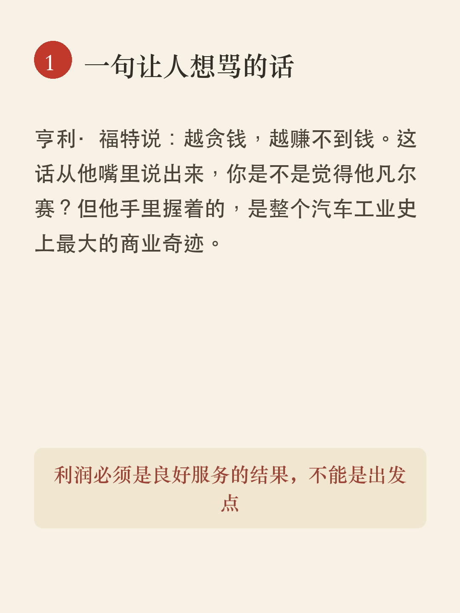
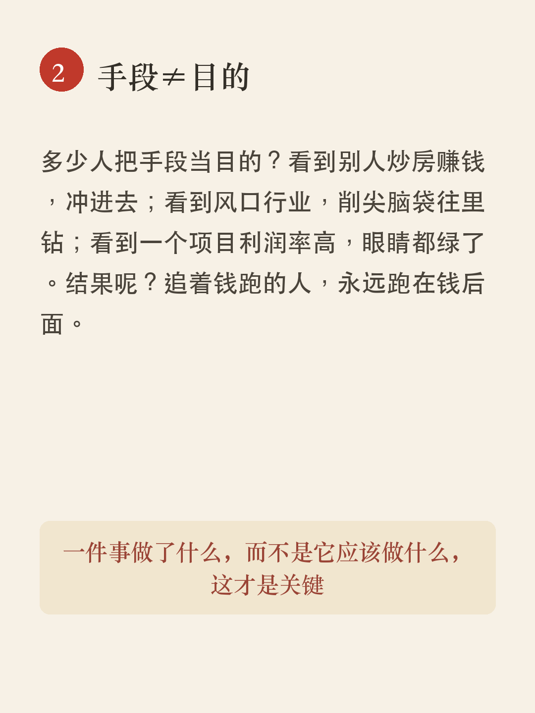
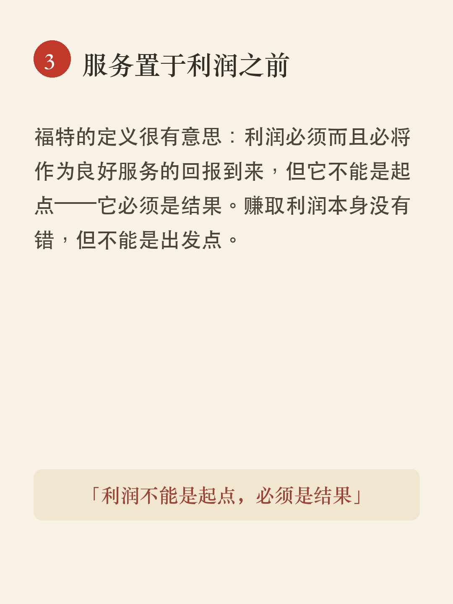
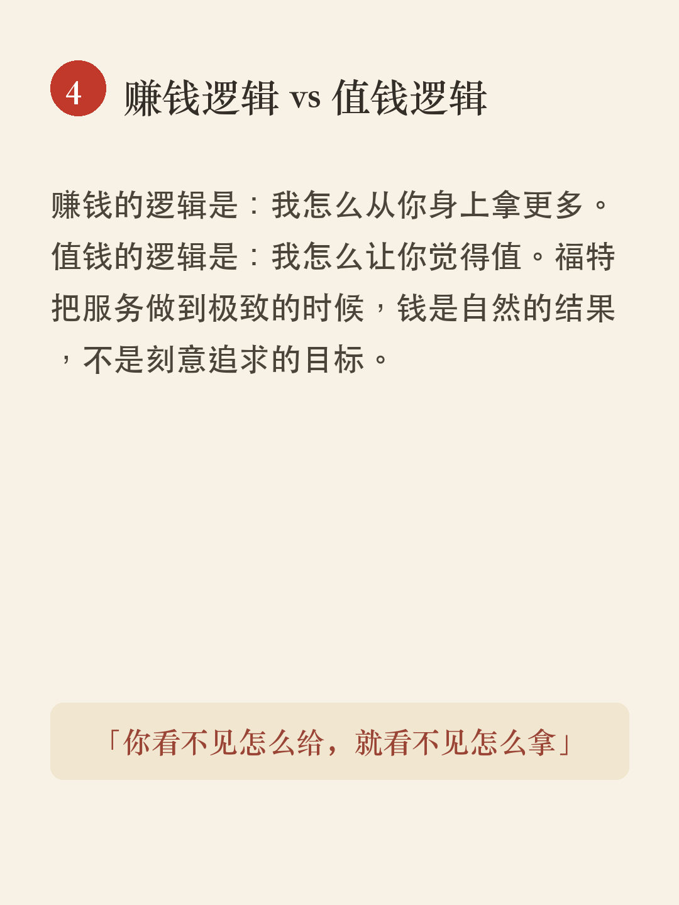
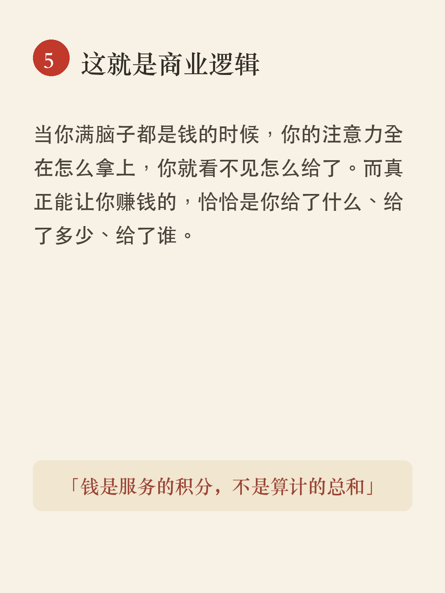
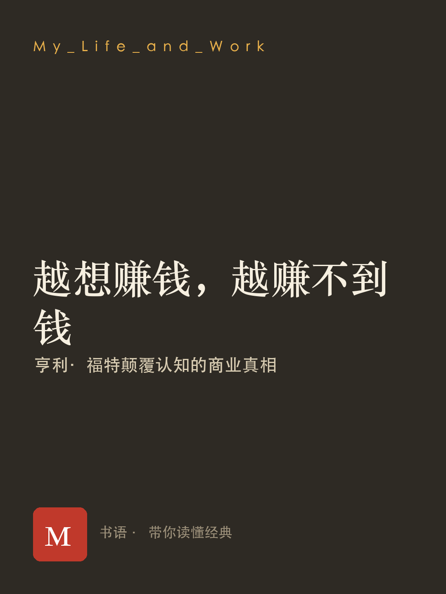
📄 配文·钩子（不剧透）
越想赚钱，越赚不到钱。不是因为钱是坏的，而是因为你满脑子都是钱的时候，注意力全在“拿”上，就看不见“给”了。
亨利·福特说：利润必须是良好服务的结果，不能是出发点。这话听起来像鸡汤，但背后有严密的商业逻辑。
多少人追着风口跑、把手段当目的？结果永远跑在钱后面。
记住：钱是服务的积分，不是算计的总和。口播稿全文
你知道吗，亨利·福特说了一句让所有想发财的人听了都想骂他的话——越贪钱，越赚不到钱。
这话从他嘴里说出来，你是不是觉得他是在凡尔赛？
但你仔细想想，他说这话的时候，手里握着的是整个汽车工业史上最大的商业奇迹。他并非反对利润，赚取利润本身没有错。但他偏偏说：如果你只是想赚钱，利润必须是良好服务的结果，不能是出发点。
你发现没有，这话听起来像鸡汤，但它背后有一套严密的逻辑。
福特强调"what a thing does—not what it is supposed to do—that matters"——一件事做了什么，而不是它应该做什么，这才是关键。多少人把手段当目的？看到别人炒房赚钱，冲进去；看到风口行业，削尖脑袋往里钻；看到一个项目利润率高，眼睛都绿了。结果呢？追着钱跑的人，永远跑在钱后面。
福特把服务置于利润之前。他说，没有利润，企业无法扩张。赚取利润本身没有错，但良好的企业必然获得回报——利润必须是良好服务的结果，不能是出发点。
那什么叫服务？福特的定义很有意思。他强调"what a thing does … that matters"，并主张将service置于profit之前。
服务的原则之一，是把服务置于利润之前。利润必须而且必将作为良好服务的回报到来，但它不能是起点——它必须是结果。
所以你看他怎么做的。他一直致力于以最小的浪费进行生产，并以最小的利润进行分销，依靠销量来获取总利润。在生产过程中，他想给员工发放最大化的工资——即最大化的购买力。由于这也带来了最低的成本，我们可以按照购买力来分销产品。
这才是精髓——利润不是目标，服务才是。利润只是你把服务做到极致的自然回报。
福特在论述他的想法精髓时，特别适合那些天天研究商业模式、却忘了商业本质的人。他说：浪费和贪婪阻碍了真正的服务。两者都是不必要的。浪费很大程度上源于不理解自己在做什么，或在做事时粗心大意。贪婪只是一种短视。
什么浪费？制造业不是买低卖高，而是以尽可能小的附加成本生产产品，并把它交给消费者。投机、炒作和精明算计，只会阻碍这个过程。
而福特想做的事，是以最小的附加成本生产、以最小利润销售，并最大化工资与购买力。这样一来，所有与企业相关的人——管理者、员工、消费者——都能从中受益。
所以你发现没有，赚钱和值钱，是两个完全不同的逻辑。
赚钱的逻辑是：我怎么从你身上拿更多。值钱的逻辑是：我怎么让你觉得值。
福特的商业实践，恰恰证明了这一点。他据此行事，并主张利润将随良好服务而来。当他把服务做到极致的时候，钱是自然的结果，不是刻意追求的目标。
所以回到那句话——越想赚钱，越赚不到钱。不是因为钱是坏的，而是因为当你满脑子都是钱的时候，你的注意力全在"怎么拿"上，你就看不见"怎么给"了。而真正能让你赚钱的，恰恰是你给了什么、给了多少、给了谁。
这不是道德说教，这是商业逻辑。
你记住一句话：钱是服务的积分，不是算计的总和。
70旧版映照scene公版✓ 判官过审农民把自己当工业家那一天，天下再也没有饥荒
🎬 福特说中国农民穷，不是因为地少，是因为思维。
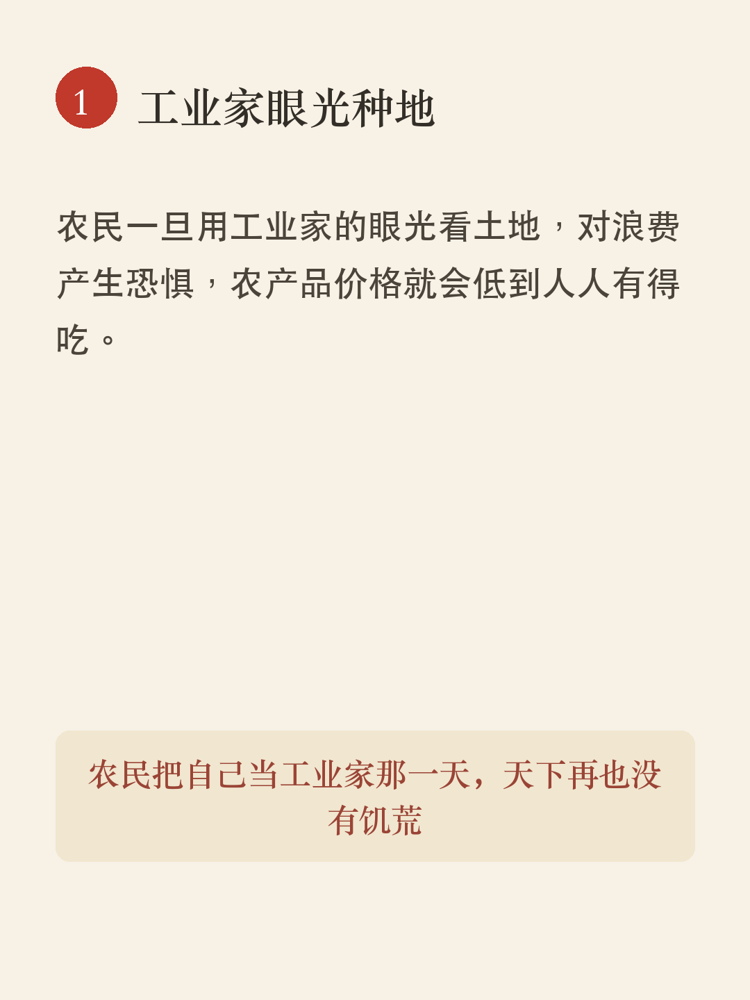
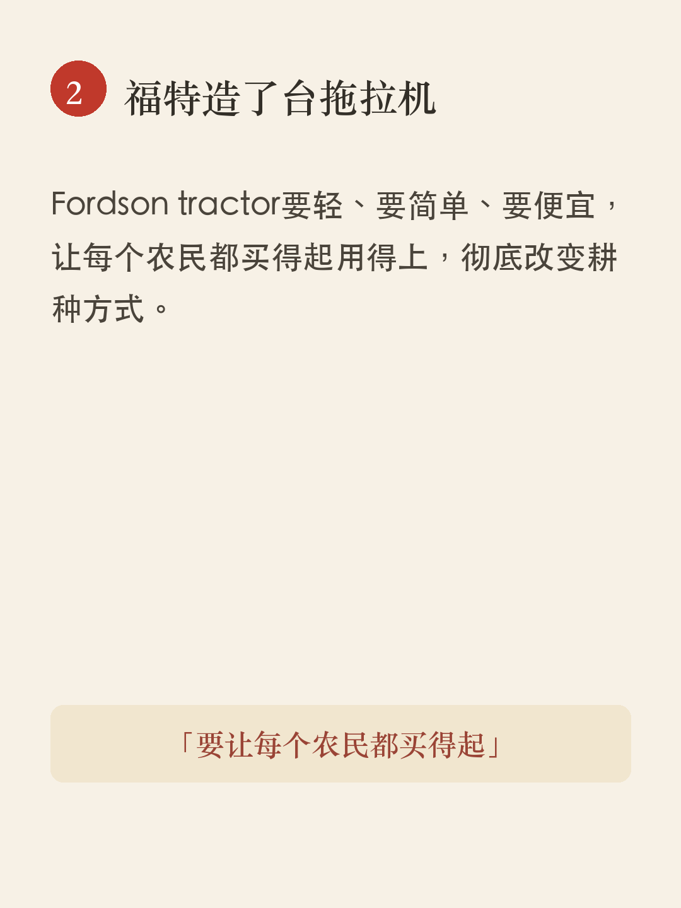
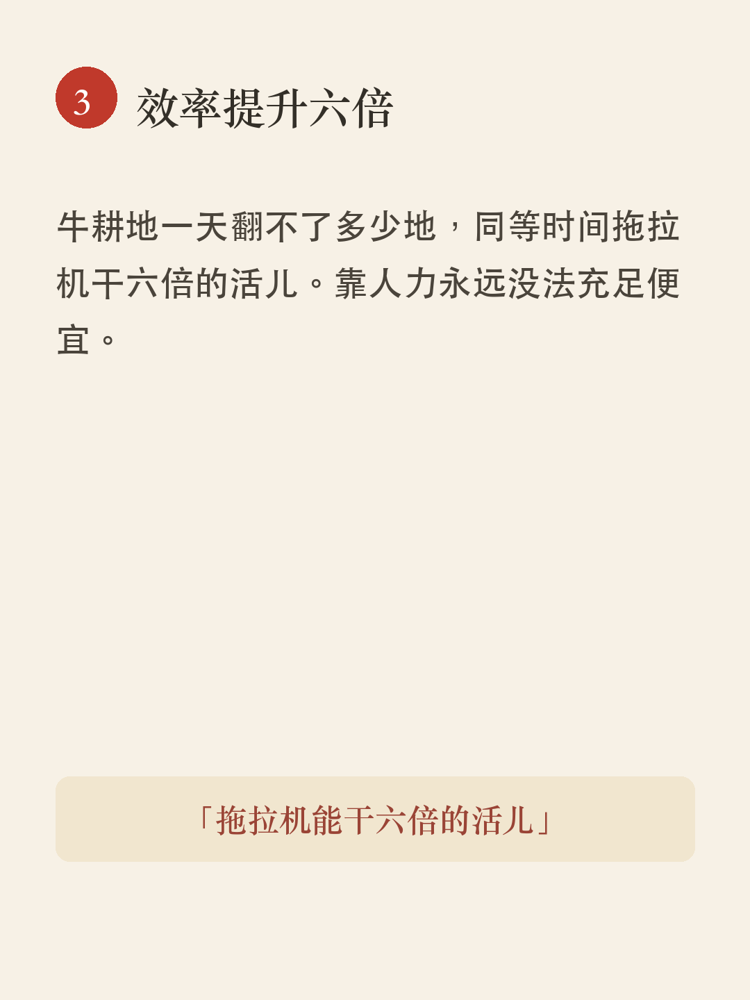
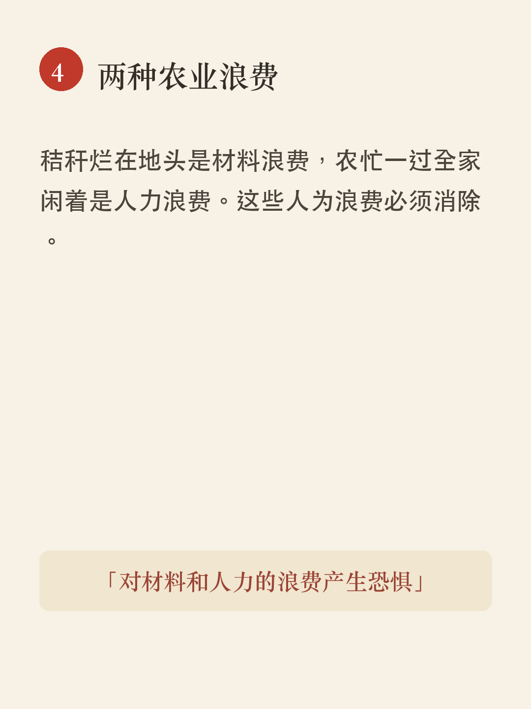
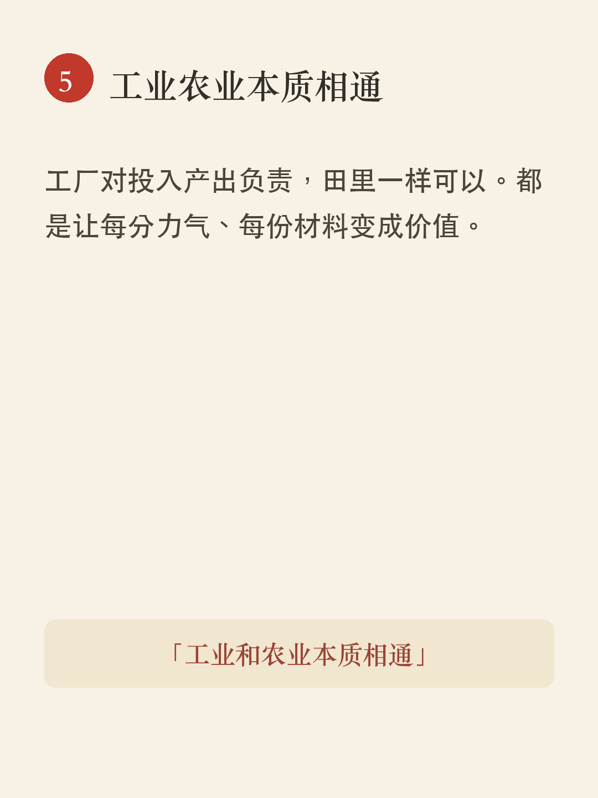
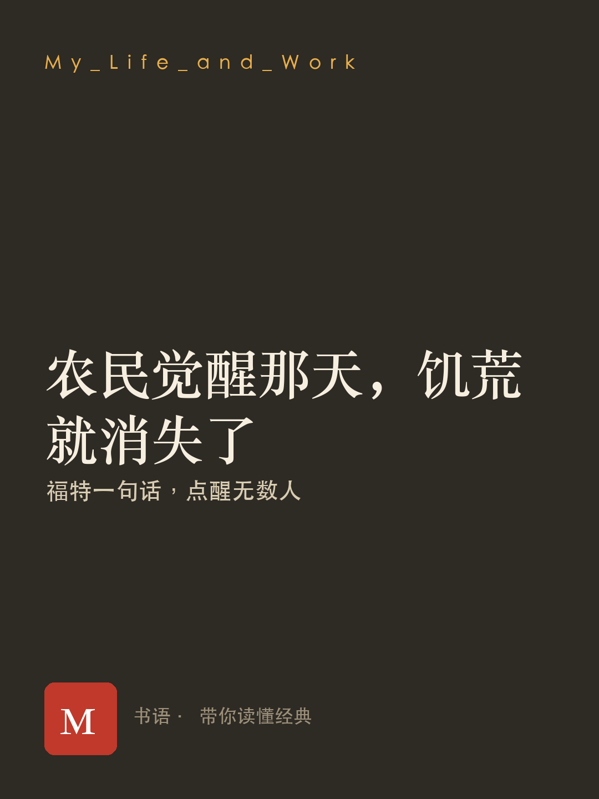
📄 配文·钩子（不剧透）
今天读到福特在书里说的一句话，被狠狠戳到了——
他说农民一旦用工业家的眼光看自己的土地，对材料和人力的浪费产生恐惧，农产品价格就会低到人人有得吃。
不是换脑子就完了，他还设计了Fordson拖拉机，要轻、简单、便宜，让每个农民都买得起。一头牛一天能翻多少地？拖拉机六倍。靠人力慢悠悠干活，农产品永远没法充足便宜。
农业的浪费在哪里？秸秆烂在地头是浪费，农闲全家闲着也是浪费。
所以农民穷不一定是因为地少，是因为还没有用工业家的标准看自己的活儿。
这才是真正的农业革命：换脑子+换工具。口播稿全文
你可能不知道，福特在书里讲过一个道理，我给你念出来——
"The moment the farmer considers himself as an industrialist, with a horror of waste either in material or in men, then we are going to have farm products so low-priced that all will have enough to eat."
翻译过来就是：农民一旦用工业家的眼光看自己的土地，对材料和人力的浪费产生恐惧，农产品价格就会低到人人有得吃。
注意，他说的不只是换脑子，也包括换工具。他在书里花了大篇幅讲拖拉机——他设计的那款Fordson tractor，要轻、要简单、要便宜，让每个农民都买得起、用得上。他说，一个农民跟在牛后面耕地，一天才翻多少地？同样的时间，拖拉机能干六倍的活儿。靠人力和牲口慢悠悠地干活，农产品永远没法充足、便宜。
农业的浪费在哪里？材料浪费、人力浪费，都是。收了麦子秸秆烂在地头是浪费，农忙一过全家闲着也是浪费。这些是常见的人为浪费情形。
福特把工业效率理念推广到农业。他说，工业和农业本质相通——都是对投入产出负责，都是让每一分力气、每一份材料变成价值。工厂能做的事，田里一样能做。
所以他那句话戳破了一层窗户纸——农民穷，不一定是因为地少，是因为还没有用工业家的标准看自己的活儿。
这才是真正的农业革命。不只是换脑子，也要换工具——用动力设备把效率真正提上去。
68旧版洞见scene公版✓ 判官过审机器不是抢你工作的敌人，是替你从泥潭里爬出来的手
🎬 所有人都怕机器取代人，但福特说了一个让所有人沉默的理由。
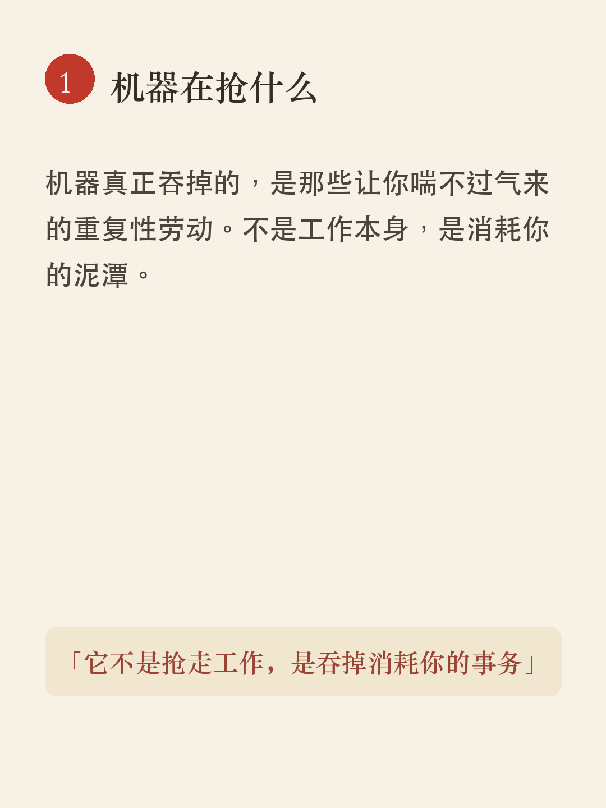
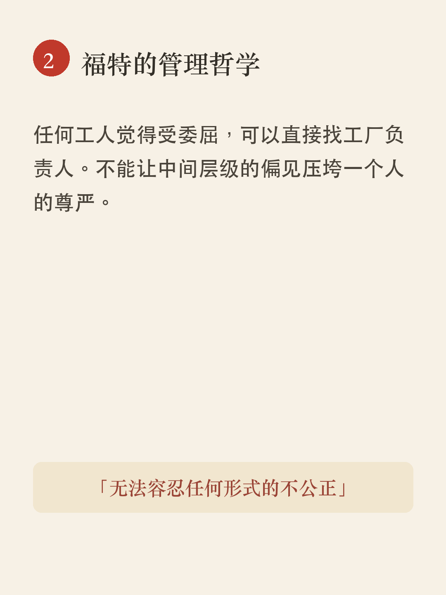
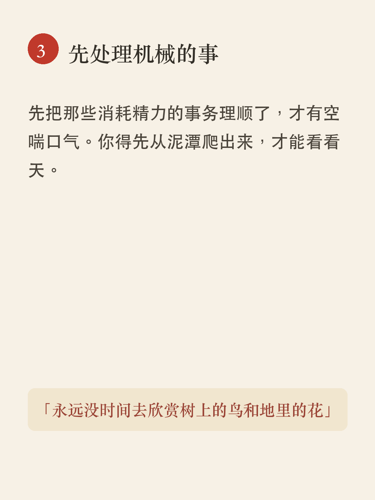
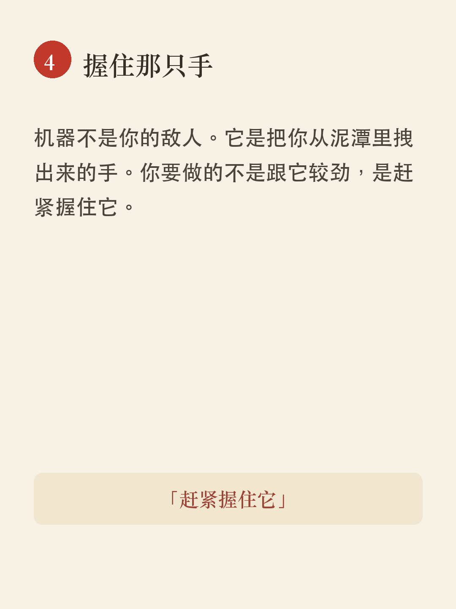
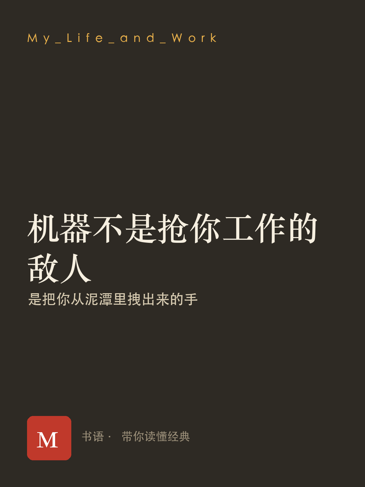
📄 配文·钩子（不剧透）
所有人都怕机器抢走自己的工作，但真相可能恰恰相反。
机器不是在抢你的饭碗，它是在帮你把那些日复一日、把人磨成零件的重复性劳动给吞掉。
福特的工厂哲学就四个字：人的尊严。他让工人可以直接找负责人申诉，不让中间层级的偏见压垮一个人。
不是让你别干活，是让你有空喘口气、看看天。机器不是敌人，是那只能把你从泥潭里拽出来的手。
握住它，别跟它较劲。口播稿全文
所有人都怕机器抢走自己的工作。但从福特的视角来看，事情可能没那么简单。
这才是机器真正在做的事。它不是把你的工作抢走，它是把那些让你喘不过气来的重复性劳动给吞掉了。
书里还有一句话特别扎心。福特说，他们厂里无法容忍任何形式的不公正。他对基层员工直接抱怨的渠道非常重视——任何一个工人如果觉得受到了不公正对待，他可以直接找到工厂负责人。这就是他的管理哲学：不让中间层级的偏见压垮一个人的尊严。
所以你再想想那些“机器威胁论”。有一种观点认为，机器替代的是那些磨损人的重复性工序。机器把那些东西抢走了。
福特在序言里说过一句话，听起来像鸡汤，但他说的是实实在在的生产逻辑。他说：除非我们先把那些机械的事务搞明白、搞利索了，否则我们永远没有时间去欣赏树上的鸟、地里的花、草坪和原野。
不是让你别干活。是你得先把那些消耗你精力的事务理顺了，你才有可能从那个泥潭里爬出来，有空喘口气，看看天。
机器不是你的敌人。它是那只把你从泥潭里拽出来的手。你要做的，不是跟它较劲，是赶紧握住它。